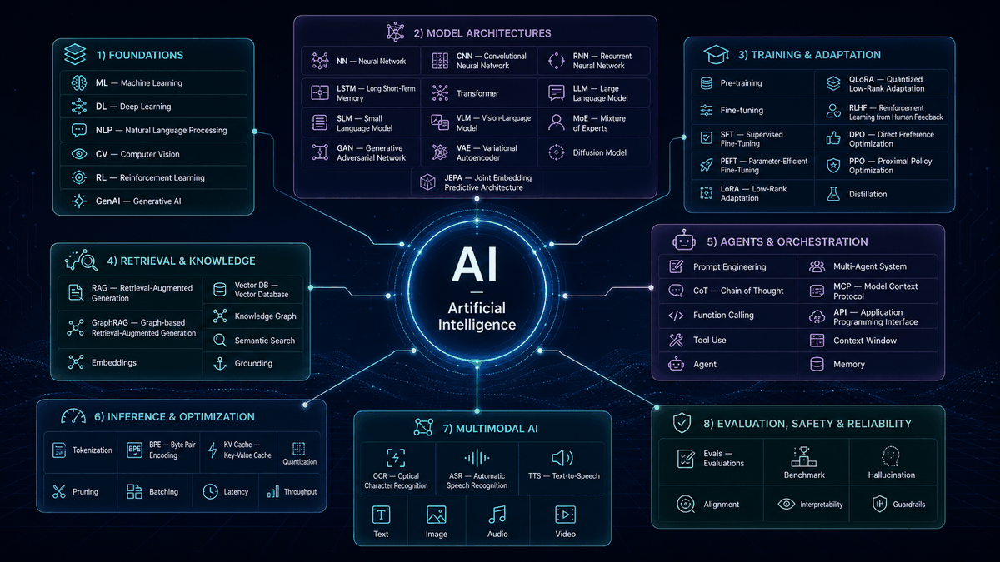

Interactive AI knowledge map
Understand the language of modern AI.
Explore the foundations, architectures, training methods, retrieval systems, agents, optimization techniques, multimodal capabilities and safety practices shaping today’s AI systems.
/
Press the slash key to focus this field. Use the arrow keys to move through suggestions and Enter to open a concept.
0 concepts
0 domains
Shareable deep links

Explore by domain
The AI landscape, one concept at a time
Every concept is a node; every line is a relationship declared in the atlas data. Node size reflects how many concepts connect to it. Select a node to open it, or press Tab to step through them.
Why this atlas exists
A practical map for navigating AI conversations.
AI terminology evolves quickly and concepts are often discussed in isolation. This atlas connects each term to the larger system: what it means, why it matters, how it works and which concepts sit around it.
Each concept has its own shareable URL. Open a concept, copy the link and use it in a presentation, learning session, technical discussion or LinkedIn post.